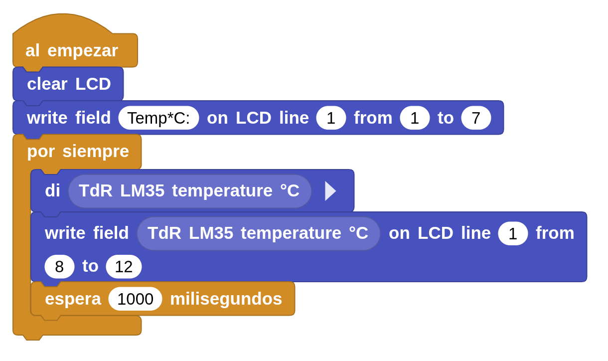
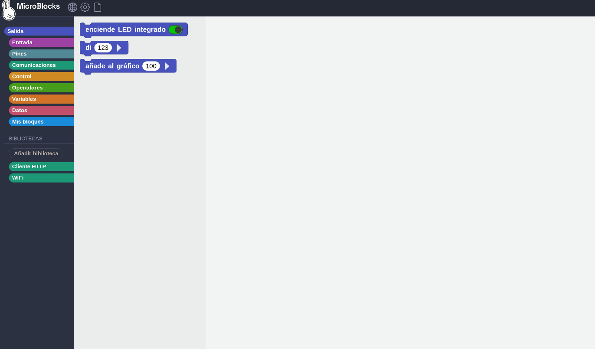

LM35 en TDR-Steam
En la placa TDR-Steam tenemos un sensor de temperatura analógico llamado LM35, conectado en el pin analógico 2, A2/IO36. 
| Sensor/Actuador/Módulo | Pin de conexión | |
| 10 | Sensor de temperatura (LM 35) | A2/IO36 |
Para saber más de LM35
El LM35 es un sensor de temperatura analógico, cada 10 milivoltios de la lectura equivale a 1º Celsius. Las lecturas analógicas de nuestra placa pueden tener valores entre 0 y 1203 (1024 valores 10 bits para guardarlos). Lo que realmente hace la placa cuando lee la entrada es convertir el valor en voltios de la lectura (de 0 a 5V) en un valor numérico entre 0 (0V) y 1023 (5V). En nuestro Shield el LM35 está conectado a la entrada analógica 2 (A2/IO36).
para guardarlos). Lo que realmente hace la placa cuando lee la entrada es convertir el valor en voltios de la lectura (de 0 a 5V) en un valor numérico entre 0 (0V) y 1023 (5V). En nuestro Shield el LM35 está conectado a la entrada analógica 2 (A2/IO36).
Por tanto el valor en milivoltios de la entrada es = (Valor entrada analógica/1023)*5*1000
El valor de Temperatura en ºC=milivoltios/10, cada 10 milivoltios es 1ºC.

Tarea Reto 21
- Duración:
- 30
- Agrupamiento:
- 1
Consiste en leer cada segundo el valor de temperatura detectado con el LM35 y mostrarlo en la pantalla LCD.
Objetivos:
- Repaso de pantalla LCD.
- Conocer y usar sensor LM35.
Código:

